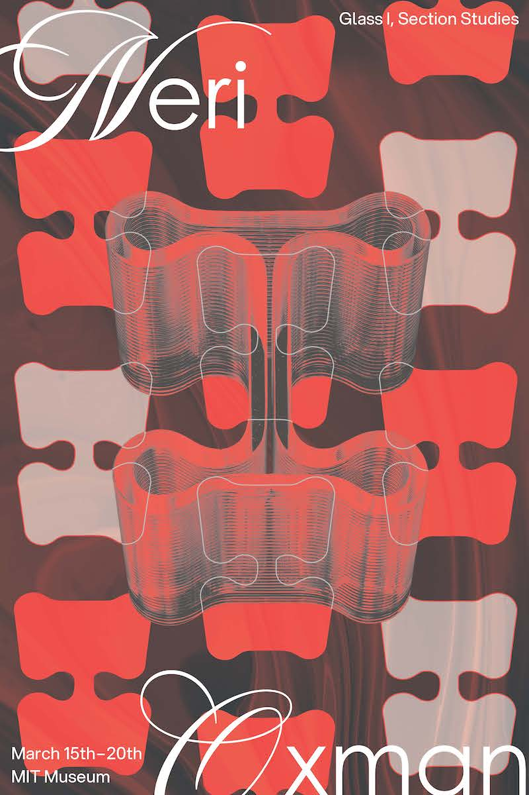
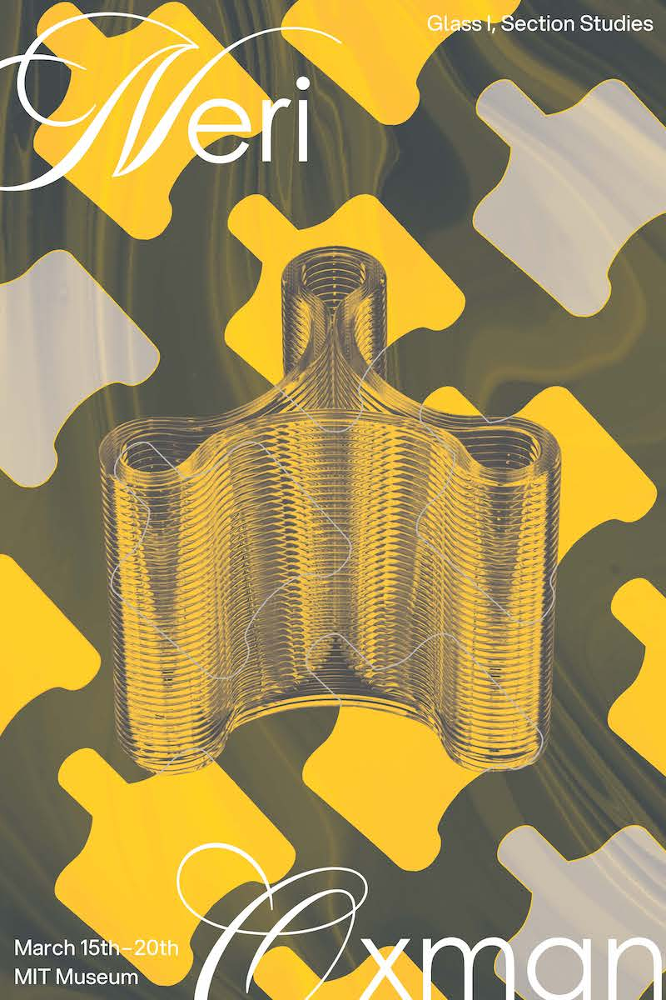

It is a project involving the design of a poster series focused on the exhibition of 3D printed glass by Neri Oxman. By layering the shape of the glass as a pattern as long as a filter of melting glass fluid in the background, showcase the idea of "layering" with "melted glass" in the 3D printing process. The color palette for the series draws inspiration from the glassmaking process itself: hues of warm colors inspired by the moments of glass melting, are complemented by tones from iron tools used to shape and refine the glass.


